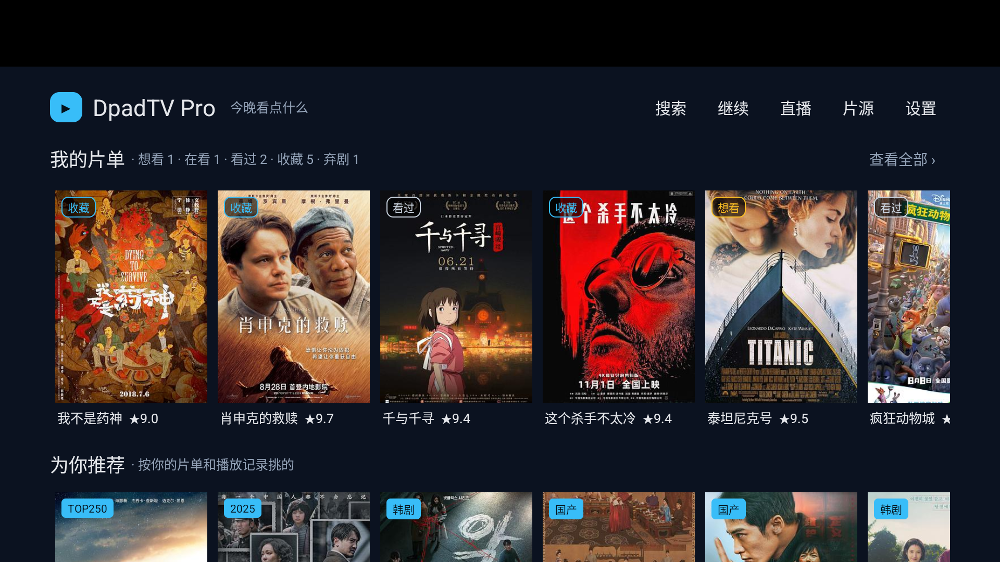
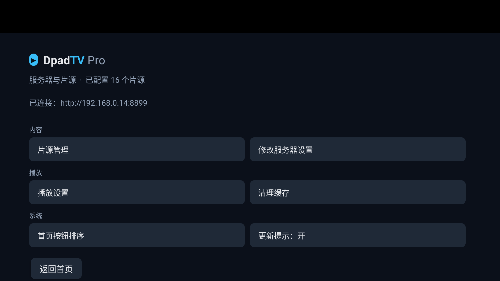

不是"换个皮"，是把字号、间距、角标语义、返回路径这些会让人困惑的地方对齐
| 问题 | 修法 |
|---|---|
| 状态角标和来源角标长得一样 "收藏 / 看过" 和 "TOP250" 都是实心蓝，语义冲突 | 状态＝空心描边 + 状态色（收藏蓝·在看绿·看过灰白·想看黄·弃剧红）；来源保持实心蓝 |
| 三行上下间距不一致 | 统一 GAP_XS + 14dp 节奏 |
品牌名两套：DpadTV / DpadTV Pro | 统一 DpadTV Pro，Pro 用弱色，字号 22 |
| 设置页一列高低不齐的按钮，右侧大片空 | 分「内容 / 播放 / 系统」，组内两列等宽 |
| 直播页、继续观看没有品牌栏 | 补品牌栏 + 统一页边距 |
| 继续观看空态是左上角一行灰字 | 居中空态：标题 + 下一步 |
| 详情页 BACK 回首页，搜索上下文丢失 | 详情页加「‹ 返回」，从结果页进的回结果页 |
| 结果页 BACK 回首页，改关键词得重来 | 结果页 BACK 回搜索页（保留关键词） |
| 搜索无结果只有一个空网格 | 空态引用关键词 + 两个下一步 |
| 详情页无法收片单，手势不统一 | 长按片名 = 加入片单（与首页同一手势） |
| 搜索词没记住，空态无法引用 | 新增 lastKeyword |


| 片源管理 / 播放设置 / 清理缓存 | 仍是上游一列按钮，可直接复用 settingGroup |
| 直播页 504 频道默认平铺 | 建议默认进分组视图，减少遥控器滚动 |
| 详情页 / 播放器 | 只做到"同色同字"，还没做到"同节奏" |
| 模拟器顶部 128px 黑边 | phone 系统镜像的 StatusBar，真电视没有 |